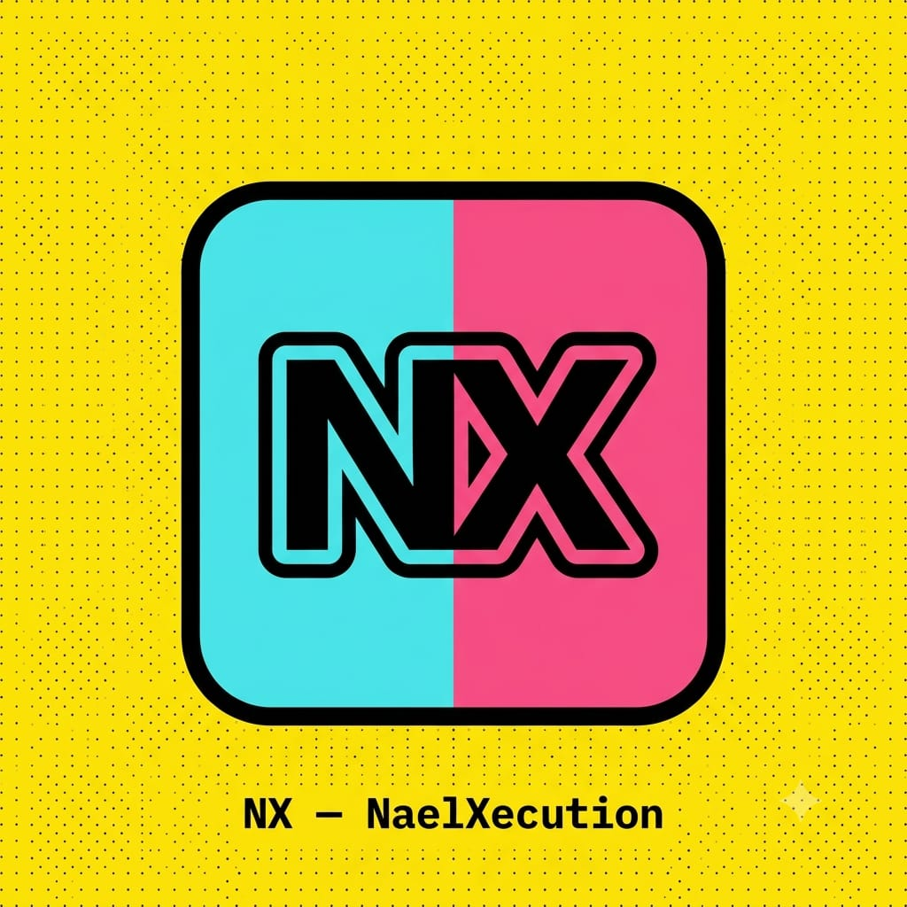
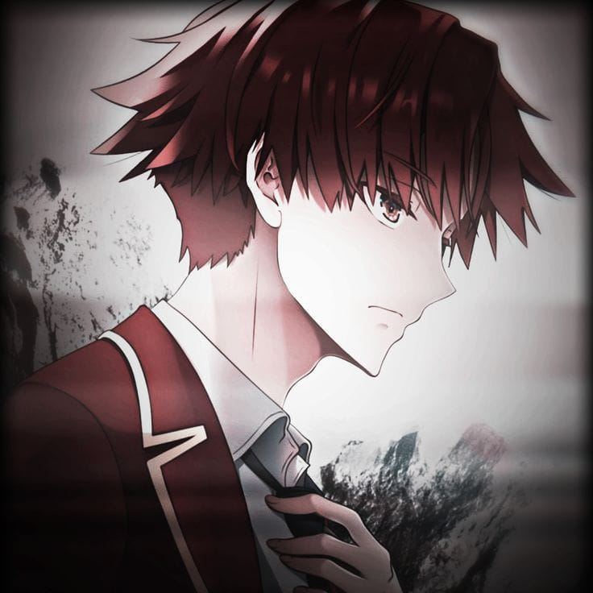

◇
Function Over Form
Design serves the information and makes important things obvious.

N4EL XECUTIONTKJ & RPL student · self-taught developer · network engineer · cybersecurity enthusiast. I enjoy configuring networks, writing software, debugging problems and learning how systems can stay secure.

Hard borders, raw geometry, high contrast, utility-first information and controlled visual noise, inspired by the cyber-neobrutalist references.
Design serves the information and makes important things obvious.
Networks, code, tools and data are connected systems.
Grid, scanlines, terminal language and controlled noise.
Black, white, acid lime and violet create hierarchy.
No fake experience. Progress and experiments stay visible.
I'm a TKJ & RPL student with a strong interest in networking, software and cybersecurity. Most of what I know comes from self-study, documentation, trial and error, and actually trying to make things work.
My primary interest is computer networking: topologies, MikroTik configuration, troubleshooting, cabling and subnetting. Alongside that, I taught myself web development with HTML, CSS, JavaScript and MySQL.
Cybersecurity is the direction I want to explore deeper: understanding vulnerabilities responsibly and learning how systems can be built to be secure and resilient.
Kept aligned with the current portfolio instead of inventing a larger stack for decoration.
user@nael:~$ whoami self_taught_developer user@nael:~$ focus networking software cybersecurity user@nael:~$ method documentation trial_and_error community user@nael:~$ status learning...
An older sibling challenged me to build a website. With no PC, I found a way to code on a phone and discovered Acode, which became the first serious step into HTML and programming.
Websites and small applications became a way to learn through actual problems: write it, break it, debug it, search the documentation, repeat.
Networking, server management, cybersecurity, robotics and hardware are becoming part of the wider technical path.
Currently studying at SMK Tamtama 1 Sidareja, majoring in TKJ (Computer Network Engineering). The formal curriculum is focused on networking, while RPL (software engineering) and the basics of cybersecurity are explored independently, alongside class.
Not everything is about networks and code.
Not much hands-on experience yet, but robotics is an area I want to dive into — a natural extension of the networking and hardware side.
Casual gaming in spare time — nothing too serious, just a way to unwind after debugging.
Need an application or website made for you? Let's turn the idea into something usable, responsive and ready to grow.
Need a website, landing page, portfolio, dashboard, or custom application? I can help from the first concept through implementation and refinement.
You don't need to arrive with a perfect specification. Bring the problem, the idea, or even a rough sketch. We'll turn the messy part into a clear digital product.
START A PROJECT ↗If this portfolio, my experiments, or the stuff I build helped you, you can support the next late-night debugging session.